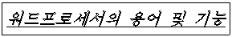
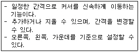
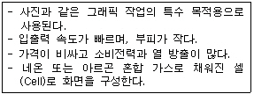
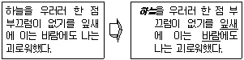
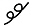
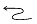
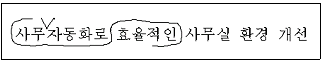
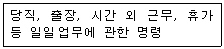

워드프로세서-2급(폐지) (2004-08-29 기출문제)
1과목: 워드프로세서 용어 및 기능
1. 다음 중 사각형 그리기 도구로 정사각형을 그릴 때 마우스와 같이 사용하는 키는?
- [Shift]키
- [Num Lock]키
- [Alt]키
- [Tab]키
(정답률: 93%)

2. 다음의 보기에서 표현하고 있는 문자속성들로만 올바르게 나열된 것은?

- 음영, 역상, 밑줄
- 기울임, 외곽선, 밑줄
- 역상, 밑줄, 기울임
- 외곽선, 밑줄, 음영
(정답률: 81%)
3. 다음은 어떤 기능에 대한 설명인가?

- 단(다단) 기능
- 래그드(Ragged)
- 탭 기능
- 치환 기능
(정답률: 84%)
4. 다음 중 확장자(Extension)에 대한 설명으로 올바르게 짝지어진 것은?
- ZIP : 백업파일
- PCX : 압축파일
- MP3 : 그림파일
- HTM : 홈페이지 문서파일
(정답률: 81%)
5. 다음 중 인쇄장치에 대한 설명으로 옳지 않은 것은?
- 큰 용지에 설계도면 등을 인쇄할 때 플로터를 주로 사용한다.
- 프린터의 해상도를 높게 설정하면 출력 속도를 높일 수 있으나 인쇄의 품질은 떨어진다.
- 잉크젯(Ink Jet) 프린터는 잉크가 번지거나 노즐이 막히는 단점이 있다.
- 레이저 빔(Laser Beam) 프린터는 해상도가 높고 인쇄 속도가 빠르며 페이지 단위로 인쇄한다.
(정답률: 79%)
6. 다음의 내용은 표시장치 중 무엇에 대한 설명인가?

- 음극선관(CRT)
- 액정 표시장치(LCD)
- 플라즈마 표시장치(PDP)
- 전계 방출형 표시장치(FED)
(정답률: 84%)
7. 다음 중 인쇄하기 전에 문서의 레이아웃(Layout)을 미리 화면에 나타내 보이게 하는 기능은 어느 것인가?
- 머지 인쇄(Merge Print)
- 미리보기(Preview)
- 매크로(Macro)
- 하드 카피(Hard Copy)
(정답률: 84%)
8. 다음 중에서 눈금자(Ruler)와 가장 관련이 적은 것은?
- 그림이나 도표의 위치
- 문단 좌/우 폭의 위치
- 탭의 위치
- 들여쓰기와 내어쓰기의 상태
(정답률: 58%)
9. 다음 중 워드프로세서의 글자모양에 대한 설명으로 옳지 않은 것은?
- 글자 크기의 단위는 '포인트(Point)'이다.
- 자간이란 글자와 글자 사이의 간격을 말한다.
- 글자 속성이란 글자에 적용된 진하게, 글자색, 밑줄, 그림자 등을 말한다.
- 장평이란 문단과 문단 사이의 간격을 말한다.
(정답률: 79%)
10. <보기1>의 문장을 <보기2>의 문장과 같이 편집한 경우 사용된 기능과 가장 거리가 먼 것은?

- 내어쓰기
- 밑줄
- 들여쓰기
- 기울임(이태릭체)
(정답률: 69%)
11. 다음 중에서 인쇄장치의 속도단위는 어느 것인가?
- MIPS
- PPM
- Mbyte
- BPI
(정답률: 82%)
12. 다음 중 RAM에 대한 설명으로 옳지 않은 것은?
- RAM의 종류에는 SRAM과 DRAM 등이 있다.
- SRAM은 DRAM보다 접근속도가 빠르다.
- 저장된 자료는 순차적 검색만을 해야 한다.
- 저장된 위치는 주소로 구분한다.
(정답률: 63%)
13. 다음 교정부호 중 위로 올라간 글자를 아래로 끌어내리는 기능의 부호는?


(정답률: 91%)
14. 다음 보기 문장의 교정부호에 대하여 올바르게 교정된 결과는 어느 것인가?

- 사무 자동화로 효율적인 사무실 환경 개선
- 효율적인 사무자동화로 사무실 환경 개선
- 효율적인 사무 자동화로 사무실 환경 개선
- 사무 자동화로 효율적인 사무실 환경 개선
(정답률: 94%)
15. 다음 중 낱장 인쇄 용지의 크기가 가장 큰 것은?
- B4
- A3
- B5
- A4
(정답률: 64%)
16. 다음 중에서 나머지 셋과 성격이 다른 키는?
- [Alt]
- [Ctrl]
- [Shift]
- [Caps Lock]
(정답률: 94%)
17. 다음 중 컴퓨터 등 정보처리 능력을 가진 장치에 의하여 전자적인 형태로 작성, 송·수신 또는 저장된 문서를 무엇이라고 하는가?
- 대외문서
- 대내문서
- 전자문서
- 사문서
(정답률: 90%)
18. 다음 설명이 의미하는 지시문서의 종류로 적합한 것은?

- 훈령
- 지시
- 예규
- 일일명령
(정답률: 87%)
19. 다음 중 여러 줄로 작성된 문장을 지울때 가장 빠르게 지울 수 있는 방법은?
- 문서의 맨 앞에서 Delete키를 이용해 한 글자씩 지운다.
- 문서의 맨 뒤에서 Backspace 키를 이용해 한 글자씩 지운다.
- 블럭을 설정하고 Delete키를 이용해 지운다.
- 그림판으로 옮겨서 지우개로 지운다.
(정답률: 85%)
20. 다음 중 저장 용량이 작은 것부터 큰 것 순으로 나열한 것은?
- KB → MB → GB → TB
- KB → MB → TB → GB
- KB → GB → MB → TB
- KB → TB → MB → GB
(정답률: 77%)
2과목: PC 운영 체제
21. 한글 Windows 98의 사용과 관련하여 다음 중에서 ( ) 안에 들어가는 키가 나머지 것들과 다른 것은?
- 그림판에서 ( ) + 직사각형을 함께 사용하면 정사각형이 그려진다.
- 파일 선택 후 ( ) + [Delete] 키를 누르면 휴지통을 거치지 않고 바로 삭제된다.
- ( ) + [Esc] 키를 누르면 [시작] 메뉴를 보여준다.
- ( )를 누른 상태에서 CD를 삽입하면 자동실행이 되지 않는다.
(정답률: 70%)
22. 한글 Windows 98의 [탐색기]에서 파일을 선택하여 [Shift] 키를 누른 상태에서 동일한 디스크 드라이브에 있는 다른 폴더로 끌어서 놓았을 때의 결과는?
- 파일의 복사
- 파일의 삭제
- 파일의 이동
- 파일의 수정
(정답률: 72%)
23. 다음 중 한글 Windows 98의 [시스템 도구]에서 제공하는 [디스크 검사]에 관한 설명으로 옳지 않은 것은?
- 파일과 폴더의 오류를 검사할 수 있다.
- 물리적 오류를 찾아내기 위한 디스크 표면 검사를 할 수 있다.
- CD-ROM의 파일 오류 검사를 할 수 있다.
- 오류 수정 작업을 할 수 있다.
(정답률: 62%)
24. 다음 중 한글 Windows 98 환경에서 네트워크를 이용하여 할 수 있는 작업으로 옳지 않은 것은?
- 폴더 공유
- 인터넷 검색
- 원격 디스크 검사
- 네트워크 드라이브 연결
(정답률: 53%)
25. 현재 사용하고 있는 컴퓨터의 한글 Windows 98의 버전을 알고자 할 때 실행하는 방법으로 옳은 것은?
- [시작] 단추의 바로 가기 메뉴에 나타나는 [등록정보]를 클릭하면 볼 수 있다.
- 바탕화면에 있는 [네트워크 환경] 아이콘의 바로 가기 메뉴에 나타나는 [등록정보]를 클릭하면 볼 수 있다.
- [작업 표시줄]의 바로 가기 메뉴에 나타나는 [등록정보]를 클릭하면 볼 수 있다.
- 바탕화면에 있는 [내 컴퓨터] 아이콘의 바로 가기 메뉴에 나타나는 [등록정보]를 클릭하면 볼 수 있다.
(정답률: 50%)
26. 다음 중 한글 Windows 98에서 특정 응용 프로그램을 제거하려고 할 때 설명이 가장 옳은 것은?
- 프로그램을 업데이트한다.
- 프로그램이 있는 드라이브를 포맷한다.
- Uninstall 를 하거나 [제어판]-[프로그램 추가/제거]를 이용하여 제거한다.
- 프로그램이 있는 폴더를 삭제한다.
(정답률: 81%)
27. 한글 Windows 98에서 사용자마다 기본 설정 및 바탕 화면을 다르게 사용하기 위한 [제어판]의 선택 도구는 어느 것인가?
- [마우스]
- [디스플레이]
- [암호]
- [키보드]
(정답률: 34%)
28. 한글 Windows 98의 바탕화면에 관한 설명으로 옳지 않은 것은?
- 모니터 전체에 보이는 배경화면을 말한다.
- 바탕화면에는 바로 가기 아이콘만 존재할 수 있다.
- 여러 가지 무늬로 바탕화면을 꾸밀 수 있다.
- 바탕화면의 색상을 수정할 수 있다.
(정답률: 75%)
29. 한글 Windows 98에서 현재 사용중인 활성화된 창의 화면 부분만을 클립보드로 복사하는 바로 가기 키는?
- [Print Screen]
- [Ctrl] + [Print Screen]
- [Ctrl] + [C]
- [Alt] + [Print Screen]
(정답률: 62%)
30. 다음 중 한글 Windows 98에서 특정 파일을 선택하고 마우스 오른쪽 버튼을 누른 상태에서 다른 폴더로 드래그한 결과로 옳은 것은?
- 해당 파일이 삭제된다.
- 해당 파일이 복사된 후에 열린다.
- 해당 파일에 대한 바로 가기 아이콘이 즉시 만들어 진다.
- 해당 파일에 대한 이동, 복사, 바로 가기 만들기 등에 관한 작업 선택 메뉴가 나타난다.
(정답률: 65%)
31. 다음 중 한글 Windows 98의 [탐색기] 실행 방법으로 옳지 않은 것은 ?
- [시작] 단추에서 마우스 오른쪽 버튼을 누른 후 [탐색]을 선택한다.
- [시작]-[프로그램]-[Windows 탐색기]를 선택한다.
- [내 컴퓨터] 아이콘에서 마우스 오른쪽 버튼을 누른 후 [탐색]을 선택한다.
- [윈도우 로고키] + [F1] 키를 동시에 누르면 실행한다.
(정답률: 67%)
32. 한글 Windows 98을 사용할 때 단독으로 사용 못하고 다른 키와 함께 사용되는 키를 조합키라고 한다. 다음 중에서 조합키가 아닌 것은?
- [Alt]
- [Shift]
- [Ctrl]
- [Tab]
(정답률: 86%)
33. 한글 Windows 98에서 [F2] 키를 사용하여 이름 바꾸기를 할 수 없는 바탕 화면의 아이콘은?
- 내 문서
- 휴지통
- 내 컴퓨터
- 네트워크 환경
(정답률: 79%)
34. 한글 Windows 98의 [제어판]에 있는 프로그램 중에서 Windows의 시작에 문제가 있을 때 사용할 시동 디스크를 만들때 사용하는 프로그램은?
- 프로그램 추가/제거
- 디스플레이
- 사용자
- 네트워크
(정답률: 53%)
35. 다음 중 한글 Windows 98에서 [시작] 메뉴의 [설정]-[제어판]을 선택했을 때 볼 수 있는 아이콘이 아닌 것은?
(정답률: 77%)
36. 한글 Windows 98에서 메모장의 기능에 대한 설명으로 옳지 않은 것은?
- 시스템의 시간과 날짜를 입력하려면 [편집] 메뉴에서 [시간/날짜]를 클릭한다.
- 메모장은 문서를 작성할 때 일반 워드프로세서와 비교하여 글자의 모양 변경 등 기능면에서 월등하다.
- [찾기] 메뉴에서 [찾기]를 이용하여 특정한 문자나 단어를 이용하여 찾을 수 있다.
- 창의 크기(가로)에 맞게 텍스트를 편집하려면 [편집] 메뉴에서 [자동 줄 바꿈]을 클릭한다.
(정답률: 62%)
37. 한글 Windows 98의 [보조프로그램]에 있는 [엔터테인먼트] 메뉴에서 이용 가능한 매체나 형식으로 옳지 않은 것은?
- 녹음기
- 볼륨조절
- 리소스 측정기
- CD 재생기
(정답률: 68%)
38. 한글 Windows 98의 [보조프로그램]에 있는 [그림판] 프로그램에서 불러오거나 저장할 수 있는 파일 형식이 아닌 것은?
- BMP
- TXT
- GIF
- JPG
(정답률: 79%)
39. 한글 Windows 98에서 네트워크를 통해 다른 컴퓨터에 연결된 프린터를 사용하고자 할 때 프린터 설치 과정에서 선택하여야 하는 것은?
- 로컬 프린터
- 네트워크 프린터
- 가상 프린터
- 서버 프린터
(정답률: 74%)
40. 한글 Windows 98에서 인터넷을 사용하기 위한 IP 주소의 형식으로 올바른 것은?
- 62:43:56:72:84:16
- 165.241.91.2
- 7569AF3G
- 756.9AF.3GB.100
(정답률: 82%)
3과목: PC 기본 상식
41. MPEG는 멀티미디어 기술 중 어디에 해당되는가?
- 압축기술
- 전달기술
- 표현기술
- 반도체 기술
(정답률: 71%)
42. 다음 중 운영체제의 기능으로 볼 수 없는 것은?
- 시스템 자원을 관리한다
- 프린터를 제어한다
- 검색어를 입력하면 관련 사이트의 목록을 보여준다
- 디스크에 파일을 저장한다
(정답률: 55%)
43. 아래의 서술에서 틀리게 설명한 것은 어느 것인가?
- 비교항목 : 정밀도 , 디지털 컴퓨터 : 필요한 한도까지 , 아날로그 컴퓨터 : 정도가 제한됨
- 비교항목 : 프로그래밍 , 디지털 컴퓨터 : 불필요 , 아날로그 컴퓨터 : 필요
- 비교항목 : 적용성 , 디지털 컴퓨터 : 범용성 , 아날로그 컴퓨터 : 단일성
- 비교항목 : 구성회로 , 디지털 컴퓨터 : 논리 회로 , 아날로그 컴퓨터 : 증폭 회로
(정답률: 60%)
44. 다음 중 데이터 통신 시스템의 특징이라고 볼 수 없는 것은?
- 거리와 시간의 극복
- 대용량 파일의 공동 이용
- 대형 컴퓨터의 공동 이용
- 아날로그 데이터 통신의 확장
(정답률: 71%)
45. 다음 중 불의의 사고에 의해 데이터가 상실되는 것을 대비하여 중요한 데이터를 보조기억장치에 복사해 두는 것을 무엇이라 하는가?
- 백업(Backup)
- 복원(Restore)
- 디스크 파킹(Parking)
- 포맷(Format)
(정답률: 85%)
46. 다음 중 하드디스크를 마치 주기억장치인 것처럼 사용하여 주기억장치의 용량을 확대할 수 있는 방법으로, 운영체제의 소프트웨어에 의해 구현되는 것은?
- 캐시 메모리
- 버퍼
- 마스크 롬
- 가상 메모리
(정답률: 72%)
47. 다음 중 일반적으로 컴퓨터를 분류하는 기준이 아닌 것은?
- 데이터 처리 방식
- 처리능력
- 사용목적
- 제작회사
(정답률: 77%)
48. 다음 중 데이터의 전송을 위하여 전송 측에서 디지털 데이터를 아날로그 데이터로 변환시키고 수신 측에서 수신된 아날로그 데이터를 다시 디지털 데이터로 변환시켜 주는 장치는?
- 라우터(Router)
- 허브(Hub)
- 모뎀(Modem)
- DSU(Digital Service Unit)
(정답률: 75%)
49. 다음 중 은행, 회사, 국가 등의 컴퓨터 시스템에 불법으로 접근하여 정보를 빼내거나 파괴하는 행위를 하는 사람을 일컫는 말은?
- 크래커
- 전문 프로그래머
- 통신인
- 시스템 분석가
(정답률: 91%)
50. 다음 중 멀티미디어 데이터를 처리하기 위해 PC가 가져야 할 기본적인 하드웨어와 가장 거리가 먼 것은?
- 그래픽 카드
- CD-ROM 드라이브
- 타블렛
- 사운드 카드
(정답률: 57%)
51. 다음 중 컴퓨터 범죄의 예방 방법으로 가장 적절하지 않은 것은?
- 서버를 운영하고 있는 경우에는 시스템 침입 방지를 위해 보안 시스템을 설치하고 고급 보안기술을 개발한다.
- 정기적으로 패스워드를 변경하여 사용한다.
- 바이러스 예방 프로그램을 설치하여 사용한다.
- 인터넷에서 무료로 제공되는 프로그램은 가급적 모두 설치하여 실행해 본다.
(정답률: 86%)
52. 다음 중 주기억장치에 대한 설명으로 옳지 않은 것은?
- 주기억장치(DRAM)의 데이터 접근시간은 캐시 메모리보다 빠르다.
- 주기억장치의 각 위치는 주소에 의해서 표시된다.
- 중앙처리장치가 처리할 명령어와 이에 대한 처리 결과를 저장하는 장소이다.
- 주기억장치에는 쓰지 못하는 읽기전용의 기억장치도 있다.
(정답률: 61%)
53. 다음 중 기존의 통신망에 특정한 부가가치를 첨가하여 고도의 통신 서비스를 제공하는 통신망을 의미하는 용어는?
- VAN
- LAN
- ISDN
- WAN
(정답률: 71%)
54. 다음 중 중앙처리장치(CPU)에 대한 설명으로 가장 거리가 먼 것은?
- 산술논리 연산장치(ALU)와 제어장치, 레지스터로 구성된다.
- 컴퓨터 각 부분의 동작을 제어·감독하는 역할을 한다.
- 데이터의 입출력을 직접 담당하는 역할을 한다.
- 주기억장치로부터 명령어를 읽어와 해석한다.
(정답률: 50%)
55. 다음 중 FDISK 명령을 실행하는 이유로 가장 옳은 것은?
- 하드디스크를 새로 구입하여 장착 후 파티션을 나누어 사용하려고 했을 때
- 플로피 디스크 드라이브를 교체했을 때
- 통신이 되지 않아 모뎀의 상태를 확인 할 때
- 주변기기의 제어가 불가능 할 때
(정답률: 56%)
56. 다음 파일 형식 중 성격이 다른 것은?
- AVI
- MPG
- JPG
- MOV
(정답률: 63%)
57. 다음 중에서 그래픽 입력장치에 해당되지 않는 것은?
- 디지타이저(Digitizer)
- 스캐너
- 라이트 펜
- 컬러 플로터(Color Plotter)
(정답률: 64%)
58. 다음 중 정보 표현의 최소단위는?
- 워드(word)
- 바이트(byte)
- 비트(bit)
- 필드(field)
(정답률: 72%)
59. 다음 중 고급 언어로 작성된 프로그램을 컴퓨터가 이해할 수 있는 기계어로 번역해 주는 프로그램을 무엇이라고 하는가?
- 컴파일러
- 어셈블러
- 유틸리티
- 서비스 프로그램
(정답률: 51%)
60. 다음의 소프트웨어 중 나머지와 응용 분야가 다른 것은?
- 한글 97
- MS-워드
- 훈민정음
- 포토샵
(정답률: 79%)